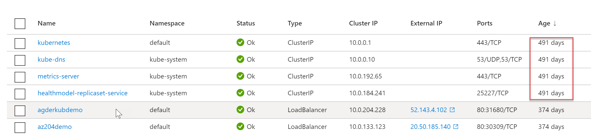
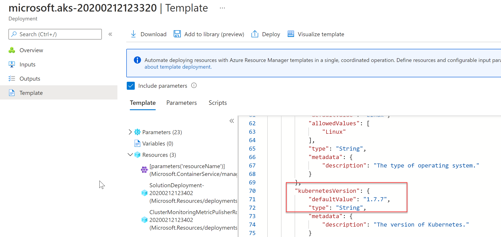
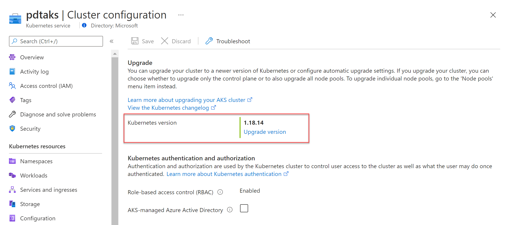
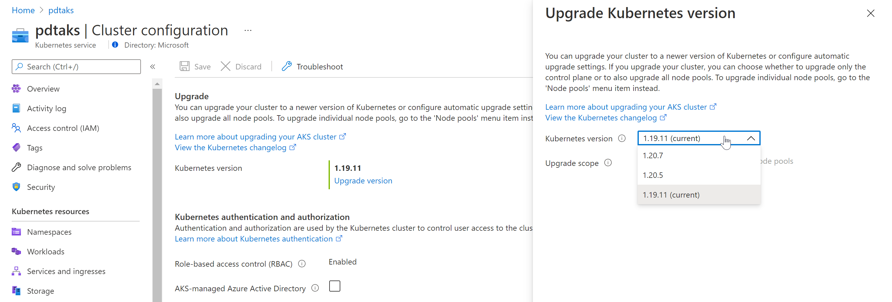
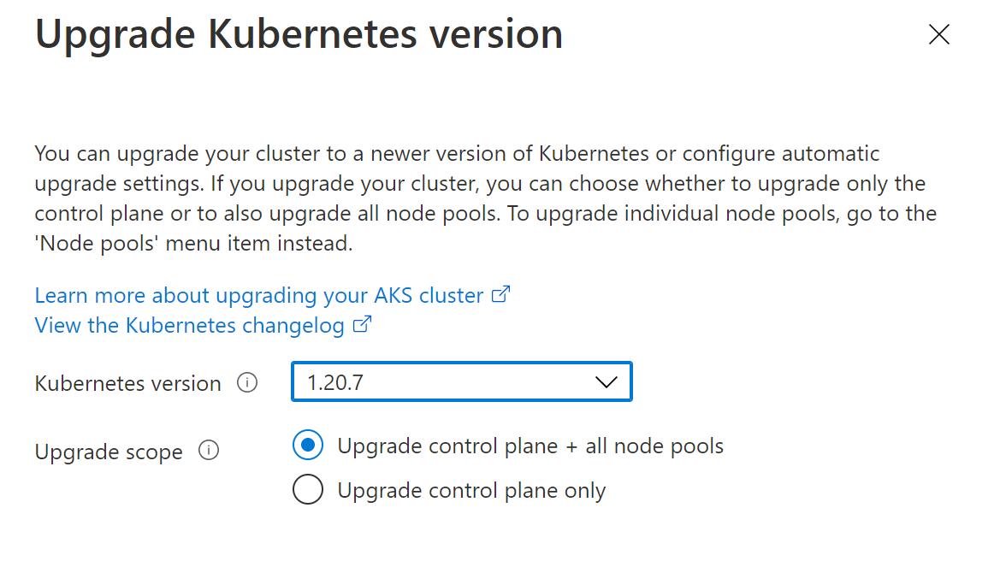

Ever since I joined Microsoft (Sept 2019) and started working in the Azure Technical Trainer team, I deployed a demo Azure Kubernetes Service (AKS) with a few sample containers. Helping me in walking training attendees through the architecture, the management concepts and what it takes to run containerized workloads using the advanced capabilities coming with Kubernetes on Azure.
Knowing this AKS cluster got deployed about 20 months back, it also meant my setup was getting a little bit out-of-date. Interesting enough, it ran for almost 500 days (I considered waiting to publish this article to celebrate its anniversary…)

Version strategy
AKS is following the overall Kubernetes supportability in regards to versioning. More details from the below links in the docs:
In short, the Kubernetes community released minor versions about every 3 months, and major releases every 9 months approximately. As of version 1.19, this got extended to 12 months support.
What this means, is that you see a list of “versions” available in Azure, for both new and existing deployments of AKS environments. At the time of deploying my cluster, it seems the active version was 1.7.7 (I could pull this up from my AKS Resource Group / Deployment history)

I assume I picked the [default] version at the time of deploying, which would mean there were 3 minor versions before, and 3 minor versions ahead.
Version 1.18 End of Life
Earlier this week, I got an internal note from our back-end security team, informing me about the AKS version 1.18 getting deprecated by June 30th, 2021 (yes, in about 2 weeks from now), and I needed to upgrade to at least 1.19.
Upgrade Process
One of the core strenghts of Kubernetes (AKS and other flavors) is how it handles seamless upgrades of its worker nodes. In short, each worker node in the cluster gets upgraded, and introduced to the cluster only when all health checks have passed successfully. If something would go wrong, the upgrade won’t be flagged - but your running containers won’t even notice any interruption either. After a successful upgrade of an existing (or introduction of a new) node to the cluster, your containerized workloads will just be started and running as expected.
To safe me from near-future upgrade tasks, I decided I wanted to upgrade to the most current version available (1.20.7 in my case). Which meant performing a “double” upgrade, from 1.18 major version to 1.19 major version, followed by another upgrade to the 1.20 major version.
I used the portal for these steps, as they are really easy to perform, but know Azure CLI or template based scenarios are also an option.
-
From the Azure Portal, browse to your AKS cluster resource. In the Overview section, notice the “Kubernetes version” parameter.
-
Select the version number; this brings you to the upgrade blade

-
Select the Upgrade Version and choose the version of choice. (In my case, the highest was 1.19.11). I also selected to upgrade control plane + all node pools
-
Confirm and wait for the upgrade process to kick off and complete successfully. This took about 6 minutes in my case.

- Once this version 1.19.11 upgrade was done, I moved on with repeating the same steps, but this time selecting version 1.20.7

-
This process took another 7-8 minutes on my end.
-
That’s all!!
Summary
In this article, I wanted to share some insights on the Kubernetes, and more specific AKS upgrade policy and process. Thanks to the architecture and orchestration of Kubernetes, upgrading versions is a rather smooth and almost seamless process. While it worked fine for a almost 18-month all cluster setup, I would definitely recommend keeping up with versions faster, instead of - what I did - waiting longer.
Got any questions, don’t hesitate reaching out! peter@pdtit.be or @pdtit on Twitter :)

/Peter